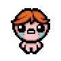
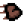
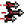
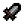
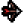
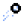
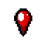

Начальный артефакт: Анемия
После получения урона персонаж до конца комнаты оставляет кровавый след, наносящий нелетающим врагам 20 урона в секунду (2 урона за тик).
Изначально закрыт разблокируется, если собрать 4 синих и/или черных сердца.


1.00

2.73

3.50

4.50

1

-1
После получения урона персонаж до конца комнаты оставляет кровавый след, наносящий нелетающим врагам 20 урона в секунду (2 урона за тик).
